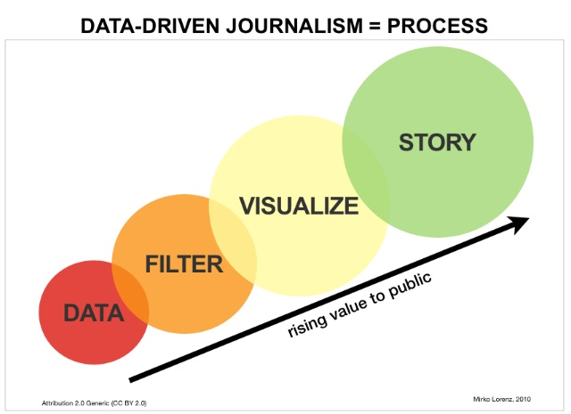

Visualizations - Studio Art
M Class: Storytelling with Visualizations
W Lab: Python Viz Libraries and Tableau Public
F Discussion: Lying with Stats/Viz, Data Journalism and Trust
For the first time this semester we have no readings with code this week. Instead, we'll have an optional Python Bootcamp at 2-3:30pm Sunday in our usual classroom. The Bootcamp will be broken into two 40min sections with a 10min break in-between. The first section will very gently cover the Fundamentals of Python assuming no programming background at all.
The second section will be more a more fast-paced step through Jupyter notebooks we'll explore Python libraries and techniques to clean, manipulate and visualize data deeper than we could in our class.
The bootcamp is designed to directly focus on parts of the Python universe that will help you get the most out of the upcoming data wrangling mini-project and any final project involving code if you chose that option. In addition, we'll be reading code throughout the rest of the semester so more exposure to Python will help you get more out of this course as well as leave you with a stronger base to build upon in your future.
If you'd like to learn the Bootcamp material but have a scheduling conflict, please email Professor Chun in advance. He will arrange a way to help you cover the material both self-paced and in office hours.
This week's reading is slightly longer than usual, but it is far less demanding and more entertaining than prior weeks. Instead of technical readings, we'll use our in-class time to cover the details of Tableau Public and apply theory from our readings there. The visualizations and narratives you are asked to critique this week are selected to be interesting and easy to read. We hope you enjoy them as much as we did.
Monday Introduction:
We open with a wonderful introduction to the beauty and essence of data visualization by David McCandleless. Then we set out a framework for our study of visualization by carefully grounding our terms. Finally, we read about best (and worst) standards of practice for visualizing various types of and trends in data.
- Knowledge is Beautiful, David McCandleless, The RSA Conference (17:59) Feb 2015
- Wikipedia terminology:
- Data Visualization (Intro upto and including Examples of Diagrams Used for DataViz)
- Infographic (Intro and Overview)
- Visual Analytics (Intro, Overview and Topics)
- Data Visualization 101: How to Choose the Right Graph or Chart for Your Data, Jamie Oetting, HubSpot.com (Cheatsheet by LabNol.org)
- 5 Ways Data Visualizations Can Lie, Kendel Fortney, Medium.com, May 2017
- Viz of the Day, Tableau Public: Quickly peruse and find one favorite viz to critically analyze in class by the metrics in the previous readings.
- Quickly peruse data-driven article "The 5 Types of Nicolas Cage Films" at the NYTimes data journalism spinout fivethirtyeight.com website. Focus on the chart at the top of the article and come to class prepared to critique how it succeeds and/or fails to use visualizations to convey an interesting commentary on film and culture.

Wednesday Lab:
Our two readings for today give a higher level view of data visualizations from the perspectives of aesthetics and storytelling. The first reading on aesthetics is relatively short despite the misleading formatting. Our second reading was chosen for the excellent job it does in clearly and succinctly explaining the many factors that go into great storytelling (despite less than inspiring case studies).
- Lab and course Digital Humanities Project reminder
- Data at Work: Best Practices for Creating Effective Charts and Information Graphics in MS Excel, Chp 1 The Building Blocks of Data Visualization, Jorge Camoes, New Riders 2016 (you can access the the full book via Kenyon LBIS' subscription to SafariBooksOnline)
- DataStories: Creating Compelling Stories with Data, Miriam Gilbert, SlideShare.net, Feb 2014
- Quickly contrast these two long-form visual stories: (a) (warning: spicy language - optional) Ali Wong, Structure of Stand-Up Comedy, Russell Goldenberg and Matt Daniels, Pudding.com, Feb 2018, or (b) The Differences in How CNN, MSNBC and FOX Cover the News, Charlie Smart, Pudding.com, Jan 2018
Friday Discussion:
We close the week with a condensed formula for data journalism by the UK Guardian. Next we explore the many and varied sources of potentially biased/fake news including readers, advocacy journalist, newsroom subcultures, concentrated media conglomerates and national security interests. Echoing our first two weeks questioning data and algorithms, our third week on visualization also brings into question if and how we can escape Plato's Cave to comprehend "the truth".
- Data Journalism at the Guardian: What It Is and How We Do It, Simon Rogers, The Guardian Jul 2011
- Biased News Media or Biased Readers? An Experiment on Trust, Jonathan Rothwell, New York Times Upshot, Aug 2018
- Astroturf and Manipulation of the Media, Sheryl Atkins, TED (10:36) Feb 2016
- Wikipedia:
- Noble Lie (Intro and Leo Strauss)
- Advocacy Journalism (Up to and including Objections)
- Does Journalism Have A Future? Jill Lepore, The New Yorker Jan 28, 2018
- The CIA and the Media, Carl Bernstein (1973 Pulitzer Prize winning journalist), Rolling Stone Magazine, Oct 1977 (Read tan sidebar titled "Working Press - CIA Style" and main article up to the paragraph starting with "Sulzberger claims that he was never formally “tasked” by the Agency..."
- (Optional) Snowden Interview: Why the Media Isn't Doing It's Job, Emily Bell, Columbia Journalism Review, May 2016
Quiz Subject:
- Coming...